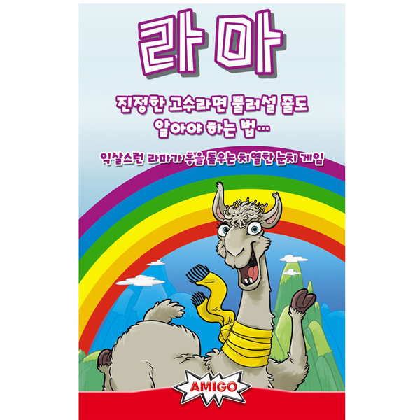

라마 (2~6인)
사이트를 방문해주신 모든 분들을 환영합니다.

게임 개요
손에 든 카드를 최대한 빨리 없애세요! 손에 든 카드를 모두 내지 못하면, 감점 토큰을 받습니다.
라마 카드가 귀엽다고 오래 갖고 있다간 감점 폭탄을 받게 될 수 있답니다.
카드는 1~6카드가 각 8장, 라마 카드가 8장 들어있답니다.
감점 토큰은 10점짜리 검은색 토큰 20개, 1점짜리 하얀색 토큰 50개입니다.
카드를 섞은 뒤, 모두에게 6장씩 나눠줍니다.
남은 카드는 뒷면이 보이게 더미를 만들고, 카드 더미 맨 위 카드 1장을 펼쳐 카드 더미 옆에 놓습니다.
가장 어린 플레이어가 선 플레이어가 되며, 이후 시계 방향으로 진행합니다.
게임 목표
게임 중 카드를 내거나, 카드를 뽑거나, 라운드에서 빠질 수 있습니다.
게임 중 손에 든 카드를 모두 없애면, 감점 토큰 1개를 반납할 수 있습니다.
게임이 끝났을 때 가장 감점이 적은 플레이어가 승리합니다.
게임 진행
자신의 차례에는 3가지 행동 중 한가지 행동을 할 수 있습니다.
한 가지 행동을 한 후 시계 방향으로 다음 사람이 차례를 진행합니다.
1. 카드 1장 내려놓기
2. 카드 1장 가져오기
3. 패스하기(라운드에서 빠지기)
버린 카드 더미에서 가장 위에 있는 카드 위에 카드를 내려놓을 수 있습니다.
이 때 오픈되어 있는 카드와 같거나, 1만큼 큰 숫자 카드를 내려놓을 수 있습니다.
1카드가 오픈되어 있다면 1이나, 2카드를
2카드가 오픈되어 있다면 2나, 3카드를
3카드가 오픈되어 있다면 3이나, 4카드를
4카드가 오픈되어 있다면 4나, 5카드를
5카드가 오픈되어 있다면 5나, 6카드를
6카드가 오픈되어 있다면 6이나, 라마 카드를
라마 카드가 오픈되어 있다면 라마 카드나, 1카드를 내려 놓을 수 있습니다.
2. 카드 1장 가져오기
낼 수 있는 카드가 없다면 카드 더미에서 카드를 1장 가져올 수 있습니다. 그런 후 자신의 차례를 마칩니다.
카드 더미가 바닥난다면, 새로 카드 더미를 만들지는 앖습니다!!! 이제부터 플레이어들은 카드 뽑기 행동을 할 수 없게 됩니다.
라운드 종료
누군가 한 사람이 손에 든 모든 카드를 내려 놓았다면, 라운드가 즉시 종료됩니다.
또는 모든 플레이어가 현재 라운드에서 빠졌을 경우 라운드가 즉시 종료됩니다.
벌점 계산
자신의 손에 든 카드 혹은 자기 앞에 내려놓은 카드에 따라 감점을 받습니다.
숫자 카드는 카드에 적힌 숫자만큼 감점을 받고, 라마 카드는 10점 감점을 받습니다.
★ 하지만 같은 종류의 카드는 라운드마다 1번씩만 감점을 받습니다.
흰색 토큰은 감점 1점짜리이고, 검정 토큰은 감점 10점짜리입니다.
이 토큰들은 언제든 자유롭게 흰 토큰 10개를 검정 토큰 1개로 바꿀 수 있습니다.
손에 든 카드를 모두 낸 플레이어는 이전에 가져온 감점 토큰 중 1개를 반납할 수 있습니다. 이 때 어떤 색 토큰을 반납하든 상관없고, 1개만 반납하면 됩니다.
누군가 40점 이상의 감점을 받게 된다면 게임이 종료됩니다.
이 때 감점을 가장 적게 받은 플레이어가 최종 승리하게 된답니다.
만약 동점이라면, 승리의 기쁨을 함께 누리세요~
🤪아직도 이해가 안되신다구요?!🤪
그럴 줄 알고 동영상을 준비했어요